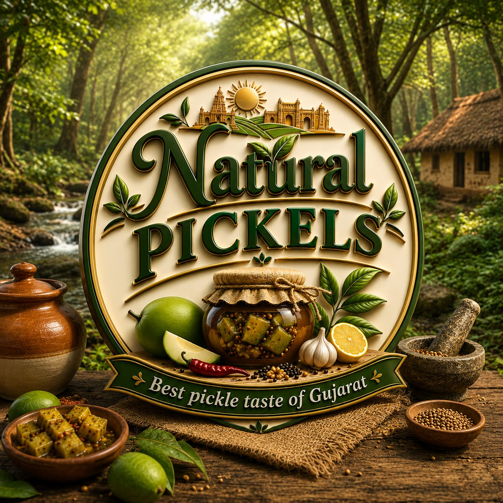

Traditional Gujarati pickle made with authentic ingredients, pure groundnut oil and homemade love.

Natural Pickle ગુજરાતનો પરંપરાગત સ્વાદ તમારી સુધી પહોંચાડે છે, જેમાં કાળજીપૂર્વક પસંદ કરેલા ઘટકો અને અસલ ઘરેલું બનાવટનો સમાવેશ થાય છે.
અમારા અથાણાં શુદ્ધ મગફળીના તેલ અને પરંપરાગત વાનગીઓથી તૈયાર કરવામાં આવે છે, જેથી દરેક ભોજનમાં તમને ગુજરાતી સ્વાદની એક અનોખી અને સંપૂર્ણ અનુભૂતિ મળે.
Discover our delicious range of homemade pickles.
Traditional mango and gunda pickle with authentic Gujarati flavours.
BestsellerSweet and spicy Gujarati mango chhundo prepared traditionally.
PopularAuthentic methiya keri pickle with a delicious spicy taste.
Garlic pickle packed with traditional Gujarati flavour.
A delicious combination of tangy and spicy traditional flavours.
A classic Gujarati combination of chickpeas, fenugreek and mango.
Traditional homemade pickle with a unique Gujarati taste.
Sweet and tangy mango pickle made using traditional methods.
Sweet lemon pickle with a balanced traditional Gujarati flavour.
Available in 250 gm, 500 gm and 1 Kg packaging.
| Pickle | 250 gm | 500 gm | 1 Kg |
|---|---|---|---|
| Keri Gunda | ₹110 | ₹220 | ₹450 |
| Chhundo | ₹110 | ₹220 | ₹450 |
| Khati Keri | ₹110 | ₹220 | ₹450 |
| Gol Keri | ₹110 | ₹220 | ₹450 |
| Mix Pickle | ₹110 | ₹220 | ₹450 |
| Chana Methi | ₹110 | ₹220 | ₹450 |
| Keyda | ₹110 | ₹220 | ₹450 |
| Lasan (Garlic) | ₹110 | ₹220 | ₹450 |
Prepared with traditional homemade methods.
Made using pure groundnut oil.
No artificial colours and no vinegar.
Authentic taste prepared with care.
Contact us for orders, availability and courier delivery.